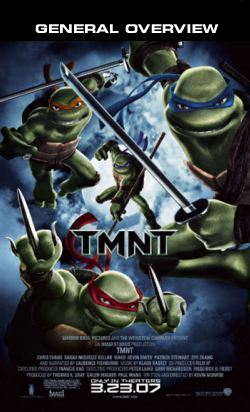

32%
(88 reviews total)
32%
(88 reviews total)

Ditching the cheeky, self-aware wink that helped to
excuse the concept's inherent corniness, the movie
attempts to look polished and 'cool,' but the
been-there animation can't compete with the
then-cutting-edge puppetry of the 1990
live-action movie.
 Peter Debruge
Peter Debruge
Variety
TMNT is a fun, action-filled adventure that will
satisfy longtime fans and generate a legion
of new ones.
Todd Gilchrist
IGN Movies
It stinks!
Jay Sherman (unemployed)
The rubber suits are gone and they've been redone
with fancy computer technology, but that hasn't
stopped them from becoming dull.
Joshua Tyler
CinemaBlend.com
The turtles themselves may look prettier, but are
no smarter; torn irreparably from their
countercultural roots, our superheroes on the
half shell have been firmly co-opted by the
industry their creators once sought to spoof.
Jeannette Catsoulis
New York Times
Impersonally animated and arbitrarily plotted,
the story appears to have been made up as
the filmmakers went along.
Ed Gonzalez
Slant Magazine
The striking use of image and motion allows each
sequence to leave an impression. It's an
accomplished restart to this franchise.
Mark Palermo
Coast (Halifax, Nova Scotia)
The script feels like it was computer generated.
This mechanical presentation lacks the cheesy
charm of the three live action films.
Steve Rhodes
Internet Reviews

- STARRING
- Mako
Sarah Michelle Gellar - DIRECTOR
- Kevin Munroe
- RATING
- PG
- THEATRICAL RELEASE
- Mar 23, 2007
- MOVIE SYNOPSIS
- After the defeat of their old arch nemesis, The Shredder, the Turtles have grown apart as a family.
- MPAA RATING
- PG, for animated action violence, some scary cartoon images and mild language
- RELEASE COMPANY
- Warner Bros.
- GENRE
- Action/Adventure, Comedies, Childrens, Martial Arts, Superheroes, Ninjas, Animated Characters
- OFFICIAL MOVIE SITE
- The Official TMNT Site
(1-8) of 88